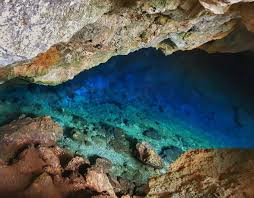
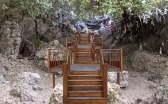

Zeus Mağarası, antik çağda İonia Federasyonu'nun 12 şehir devletinin toplantı merkezi olan (Panionion) bugünkü Güzelçamlı sınırları içindedir.Antik Yunan mitolojisine göre, göklerin Olimposlu hükümdarı Zeus, Zeus'un onu kızdırmasından sonra denizlerin hakimi olan kardeşi Poseidon'un gazabından kaçmak için mağaraya saklanırdı.


 "Aydın"a dönmek için basın
"Aydın"a dönmek için basın